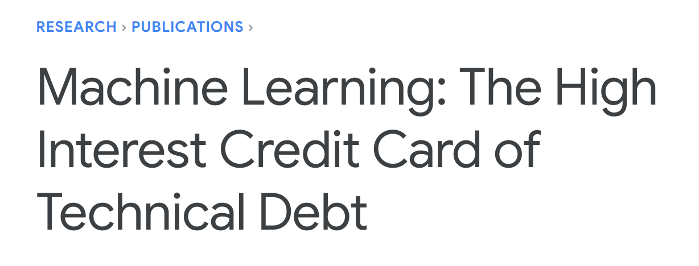

They Didn’t Stop To Think If They Should
Tim Gross | Machinist Labs
My name is Tim Gross from Machinist Labs, and my talk is titled “They Didn’t Stop to Think If They Should”
or…
Machine Learning And The Internet Of Unpatched Things
or…
Because Eternal Vigilance is the Price of Liberty, We Have to Talk About Ethics of the Tech Industry Again
We’ve updated our privacy policy!
The opinions expressed in this talk are the speaker’s alone and do not reflect the view of this conference, your employer, or my mom. Any reference to or citation of any person or organization does not constitute or imply an endorsement or recommendation of the content of this talk. The speaker is grossly unqualified to tell you how to live you life. Your mileage may vary. Not to be used in the manufacture of nuclear weapons. By attending this talk the speaker hereby grants you an irrevocable, perpetual, non-exlusive, tranferable, worldwide license to be excellent to each other.
why is it especially important to talk about ethics when we start talking about ML and IoT? What makes these things special? What makes them different from other software? Why do we as engineers even need to discuss this stuff? “Ethics is hard!”
Michael Laris, Washington Post, 24 May 2018
Back in March a self-driving car operated by Uber killed a pedestrian. The NTSB investigation is still ongoing, but what is clear is that the vehicle had no business being operated without direct supervision. The sensing system had lots of false positives that caused it to brake erratically. So they turned the braking system off. But apparently that message never got to the folks who’d turned off the vehicles’ own automatic braking nor to the attendee of the vehicle. So the vehicle “saw” the pedestrian and did nothing.
James Vincent, The Verge, 24 Mar 2016
A couple years ago, MSFT demonstrated their ML capabilities with the Tay chatbot. They let it loose to learn from whatever racist trolls wanted to teach it. The experiment was stopped and the whole debacle embarassed MSFT. Now clearly the horrible Internet people are primarily to blame here, but the researchers failed to anticipate the “side channel” attacks inherent to their system
Russell Brandom, The Verge, 12 May 2017
in an IoT example, last year countless devices in UK hospitals were taken over by Wannacry ransomware. patient lives were put at risk not just because of poor patch hygine but because of the design flaws that allowed access to the devices in the first place and because of warped incentives in the government programs that produced the stolen malware in the first place.
The Guardian, 31 Mar 2018
Tesla’s autopilot has been implicated in the deaths of several drivers at this point. We (and Tesla stockholders, apparently) are constantly reassured that these are the result of improper handling and not rushing these systems into the real world before they’re ready.
Kashmir Hill, Forbes, 16 Feb 2012
Machine learning algorithms may know more about us and our loved ones than we do ourselves. Target was able to determine from customer purchases not just when customers are pregnant but at what stage of their pregnancy they were (buying unscented products during late stages, for example).
what all these stories have in common is that like any other failure there’s almost certainly no “root cause”; it’s unlikely that anyone at these companies set out with awful intentions. It’s a complex combination of socio-technical systems and the incentives they set up. But at the end of the day, it’s people in our industry – the people in this room – who are the ones who execute and implement these systems
a problem of scale
the problem we have here is not just that these systems all have serious real-world consequences; we can look at the Therac-25 accidents in the 80’s for examples of that. the problem is that those consequences are multiplied by the scale of these systems.
quantity has its own quality
a huge part of the value proposition of IoT and ML is the scale of the data involved: collecting massive amounts of data from edge computing devices, and processing massive amounts of data in ML models.
but the scope of machine learning and IoT is incomprensible to ordinary users. when you can determine through a ML model of someone’s purchases not just that they are pregnant but that they’re in the 3rd trimester, this isn’t a piece of data that the consumer willingly and knowingly shared with you. creating informed and meaningful consent is all but impossible
Robison Meyer, The Atlantic, 3 Oct 2013
because ML is poorly understood, attacks on it can have open-ended results. maybe today someone is using a William Gibson’s Ugly T-Shirt to protect their identity from ubiquitous law enforcement use of facial recognition…
James Vincent, The Verge, 3 Jan 2018
what happens when a banana looks, not like a toaster, but a bomb or weapon? when an “accident” of that kind occurs, do the engineers of the system bear responsibility for failing to protect against this kind of “side channel” attack?
The team found that with this approach, they were able to confuse a machine 100 percent of the time into classifying a stop sign as a 45-mile-per-hour speed limit sign, and a right-turn sign as a stop sign.
Kimberly Mok, The New Stack, 14 Sep 2017
embedded industry stuck in archaic threat model
if you thought the enterprise was bad: they’re still shipping devices with shared private keys and hard-coded passwords. we used to say things like “well if you have physical possession then it’s game over” but that’s always the case with IoT devices. But we have answer to that: “secure boot” using TPM to sign the bootloader and OS updates (without which any device can be rooted). But this is treated as an expensive add-on rather than the default
http://www.eclipse.org/hawkbit/
existing solutions for IoT Over-the-Air updates (OTA) are mostly research projects at best (ex. Hawkbit, which depending on how you look at it is either an insecure-by-default toy, or an overcomplicated kit-of-parts)…
Our abdication of responsibility invites political remedy
the problem with our complacency on this as an industry is that it invites someone to “do something” about it.
“We have to do something!”
“This is something”
“We must do it!”
we’ve seen this over and over again. look at the evergreen fights over encryption, where the government thinks they can somehow make math available only to Good People
Disclaimer of Warranty. Unless required by applicable law or agreed to in writing, Licensor provides the Work (and each Contributor provides its Contributions) on an “AS IS” BASIS, WITHOUT WARRANTIES OR CONDITIONS OF ANY KIND, either express or implied, including, without limitation, any warranties or conditions of TITLE, NON-INFRINGEMENT, MERCHANTABILITY, or FITNESS FOR A PARTICULAR PURPOSE. You are solely responsible for determining the appropriateness of using or redistributing the Work and assume any risks associated with Your exercise of permissions under this License.
https://www.apache.org/licenses/LICENSE-2.0
today much of our work is protected by saying “hey we don’t warantee this for fitness for any particular use.” this is the Apache license but other OSS licenses are similar, as are most EULAs. we’ve been allowed to get away with this, but that could change.
Do you want to be personally liable for bugs in your code?
https://news.ycombinator.com/item?id=16954306
top post on The Orange Site: “what many posters here miss is that a big group of tech people have no interest in dealing with legal matters.” aw, poor baby! you don’t get to be part of a world-impacting profession and pretend there are no real world consequences. childishness!
feature, not bug
if you can’t do your job to protect the privacy of users and have to close up shop: Mission. Accomplished.
Salesforce CEO Marc Benioff thinks America needs “a national privacy law… that probably looks a lot like GDPR.
“This is going to help our industry… It’s going to set the guardrails around trust, around safety. It’s going to provide the ability for the customers to interact with great next generation technologies in a safe way.”
Simon Sharwood, The Register, 30 May 2018
But it doesn’t have to be that way. In this interview with Marc Benioff he points out this can be good for our industry. It’ll “set the guardrails”
Benioff went on to say that as artificial intelligence is used in customer service, “that starts to cross the line on what is trust. And that’s where our industry really has to come forward and say we’re going to make sure that these technologies are trust-based. And I think the Europeans definitely got that figured out.”
Simon Sharwood, The Register, 30 May 2018
And this is deeply important because we as an industry have failed to set those guardrails for ourselves. It’s not too late. What can we do?
Consent
[10:00]
consent is the only workable guiding model when we’re talking about relationships between individual people. I consent to being in a relationship with you. You consent to being in a relationship with me. When you decide you don’t want to be in that relationship you can withdraw consent and I’m supposed to respect that. We hopefully all understand this by now?
But consent has some limits once we get a lot more people involved. Although individual consent is the basis of liberal democracy, there are some times when we decide that the will of the community overrides the consent of an individual.
Steve Sack, Star Tribune, 27 Jan 2015
We expect everyone to pay their taxes. We ask that people are vaccinated. And the boundaries of individual vs community consent vary by culture. ex. in the EU they protect individual consent strongly…
Ilya Somin, Washington Post, 29 May 2015
whereas in the US we have a mixed bag where businesses (which are supposed to be individuals) are often given the power of the community to override individual consent, but very little of the responsibility of consent.
https://www.google.com/search?q=externality
we see failure of consent at play when we look at the Uber accident. the woman who was killed didn’t consent to be part of Uber’s experimental driving program. she wasn’t behind the wheel. what does “consent” mean when other human lives are treated as an externality? aside: are these results being manipulated? the canonical example is pollution! what coal industry PR team infiltrated this into Google’s results?
values vary
ethical definitions vary b/c values vary (ex. that balance of community vs individual consent varies significantly between Europe and the US). but we’re not the first people to have this problem! so how do other professions solve this problem…?
“With great power comes great responsibility”
licensing as
self-regulation
historically licensing and professional organizations (ex. AMA, AIA, ASME, bar associations) have arisen from the professions themselves rather than being imposed clumsily from the outside. government licensing requirements are typically delegated to the professional organizations
licensing requires monopoly
professional certification w/o the consequences of regulation is basically toothless. we see lots and lots of useless rent-seeking certifications today already (CompTIA, Project Management Institute). it’s worth considering what the side-effects of regulation-supported monopoly would be.
We do not believe that it is merely a coincidence that the entry and standards of practice are most strictly regulated for physicians, dentists, and veterinarians… where the costs of receiving poor services could be high or sometimes even catastrophic.
ref http://www.nber.org/papers/w10467.pdf
study by Marc Law & Sukkoo Kim of National Bureau of Economic Research shows that professional organizations have acted mostly as a counter to information assymmetry rather than creating monopoly power. consumers of our services generally don’t understand what they’re buying, and so professional bodies provide an answer to the question of whether the product is acceptable. professional organizations ethical requirements are typically about fair dealing and bare minimum safety guidelines.
gatekeeping
… so in other words they serve as gatekeepers. well, that’s a little problematic isn’t it? we have enough barriers to entry in our profession as it is. we still have a lot of work to do, but this profession is one that can help bootstrap people firmly into the middle-class. so adding new barriers like “you must have this degree” or “you must have this many years experience working under a licensed developer” seem like they’d work against the direction we want to take our industry, right?
shared ethical baseline
but an advantage of a professional organization’s ethical framework is that it at least gives a shared baseline: right now we’re all trying to figure this out for ourselves. and we should hold each other to task
what is to be done?
[20:00]
waiting for “the industry” to fix it isn’t working. we all, individually, are the industry. need to take individual action:
- influence the community
- ex. talk about this stuff!
- ex. what organizations do we work for?
what about…?
“whataboutism”: because “values vary” it isn’t constructive to see e.g. Microsoftees protesting ICE but then turn around and say “what about their military contracts?” or “what about that time when MSFT’s CEO from 17 years ago said meanie-head things about open source?” This is not helpful.
Who’s hiring?
the labor market for our profession gives us enormous power right now. we can push hard for better hiring policies. we can push hard for D&I efforts. we can push hard for our organizations to be better
ensure your own mask is secure
that being said, we should also cut each other some slack. you don’t know much about the circumstances of any particular person. so while we should be holding each other to task, individuals need to make their own decisions about where they work and that doesn’t make them The Enemy. (unless they work at Palantir, just sayin’)
direct action
what is available to everyone regardless of our work conditions, and perhaps more effective than anything else we can do, is direct action at an engineering level. what choices do we make as technologists?
“Immutable”
… per user encryption keys can be used to allow immutable infrastructures that are compatible with the “right to be forgotten”
def should_brake(road):
if road.contains(object.HUMAN):
print("oh shit!")
# TODO: this is causing erratic driving on false
# positive detection. Uncomment this once we have
# that solved. Someone should remind the field
# engineers to tell the test drivers they need to
# pay attention to the road.
# return True
return False
we need to take responsibility for quality proportional to the risks involved with the software. this is obvious in self-driving cars
ML models are state
our entire industry has unified around our worries about statefulness, but…
ML is the ultimate stateful application. you’re using software to generate these software models – the entire application is a side-effect! how can we influence those side-effects?

https://ai.google/research/pubs/pub43146
we desperately need better tooling to design-out unexpected behaviors in ML. The hidden feedback loops and undeclared consumers, and entangled data dependencies represent a side-channel source of technical debt. and it’s the worst kind of technical debt – it’s “shadow debt” that’s taken on unknowingly.
SQL > ML
first rule should always be: why are we choosing ML over some well-tuned SQL or other algorithm? are we choosing to use a method with chaotic feedback mechanisms instead of something that’s simple and deterministic simply because of resume-driven development?
models should be testable and human-interpretable
simple linear or logrithimic regression models are easier to debug, calibrate, and avoid feedback loops than models that try to optimize their own accuracy. combine features in human-understandable ways, remove unused features (which represent both technical debt and side-channel opportunities), quantify any observed undesirable behavior and build tests for it.
align training data with real world demographics
choose ML model inputs that reflect the population. this is win-win: align engineering ethics with business needs (ex. “if we pick machine vision training data that reflects real demographics, we can avoid the embarassment for our organization of having to explain why our software acts racist.”)
technical leadership
we can’t rely on project managers or business analysts to take the lead on designing our systems ethically because they simply may not understand the side-effects. you’re the technical professional: they’re expecting you to take the lead on this!
“best practice is…”
“the best thing about best practices is there are so many of them to choose from.” you don’t need to ask permission from your business analysts and project managers on opinions that are purely technical
formal Agile methodologies contribute to the problem. “act ethically” doesn’t have any story points in this epic. But you’re supposed to be a professional, not a JIRA clock puncher. act like it!
We aren’t a craft anymore. We might feel like artisans with laptops but what we produce could potentially be in front of a significant chunk of the human race by lunchtime. We’re not hand-crafting dovetail joints here.
Anne Currie, The Register, 1 Mar 2018


{kind=link}